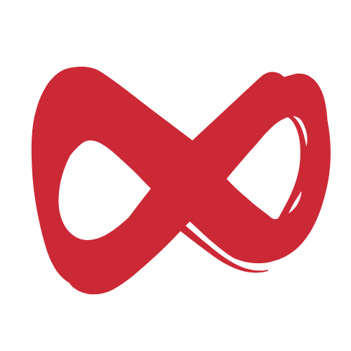

We're Here. We're Ready.
Are You?
We've been watching, waiting, and preparing.
The streets of Jeddah are calling, and Jeddin is here to answer—but we need you.
It's time to revive the culture of street sports.
Ready to enter our world?